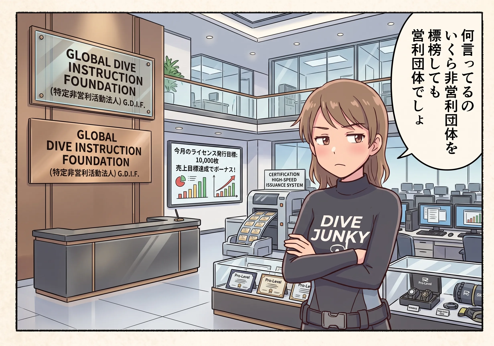

The road Orz passed by 2026 年 07 月
07 月 18 日 ( 土 )
Dive #178 潜水指導団体って結局何？
Yahoo 知恵袋に以下のような質問がありました。
スクーバダイビングの、PADIなど指導団体の定める規則の本音と建前についてです。
たとえば、水深30mくらいの深場に、経験豊富でチェックダイブでも問題ないOWの人を案内する、というのはある話だと思います。
ですが、これは厳密にはPADI（他の団体でもいいですが、自分が知っているルールがPADIだけなので）の規則には反していますよね？
① PADI加盟店がこういう形態でショップを運営することについて、PADIとの関係性やクオリティマネジメントの観点からは問題ないのでしょうか。
② PADIの規則はお願いベースであって、PADI加盟店と名乗るにあたって強い拘束力がない、あるいはPADI側も事実上ルールを守らないことを黙認してくれているということでしょうか。
③ あくまでも、講習のみは指導団体と関連があって、ファンダイビングは団体とは関係ないから規則は関係ないよというような建て付けなのでしょうか
もしくは、私が何か勘違いをしているのでしょうか。
現状の多くのショップの運営や形態に不満があるわけではなく、ただの興味です。ショップの人にはなんだか聞きづらくて、ここで聞いてみることにしました。
よろしくお願いいたします。
質問に回答する前に、質問に何らかの想定がされているのが明らかなので、まずその想定自体が現実ではなく、実際の現実について整理をしていこうと思います。
４つの章に分けざるを得ないこともあって、長くなります。もちろんこれは業界内の仕組みの話なので、一般のダイバーにはほとんど縁がない話になります。ですので、この記事は知りたい人だけが読めばよい話になります。
興味がなければ読む必要はありません。
またこれらの話は、ぼくがダイビング業界に飛び込んでから徐々に知っていったことでもあるので、もしかすると正確さからずれている可能性もあります。こうなっているという話だけではなく、ぼくからはこう見えているという話にもなりますので、その点は割り引いて読まれることをお勧めします。
また質問者の方の質問に答えるわけではないことも、あらかじめお知らせしておきます。
以下の４つを整理していきたいと思います。
- 指導団体とダイビングショップ、ダイビングサービスとの関係
- 基準とは
- 講習は基準とマニュアルでワンセット
- 基準や講習は規則ではない
- 一般ダイバーは基準や学んだことを守らなくて良いのか問題
1 指導団体とダイビングショップ、ダイビングサービスとの関係
最初に指導団体とは何かについて簡単に、しかも雑にまとめます。
指導団体は以下に分類できます。
- 営利企業
つまり普通の企業です。合資会社、合同会社などもありえますが通常は株式会社です。 - 非営利団体
一番誤解されやすい事業形式です。
非営利団体もビジネスは普通にします。寄付だけで成り立つ非営利団体というのはほとんど聞きません。たとえば WWF や知床財団、日本野鳥の会なんかでも商取引をしていますよね？ちゃんと製品やサービスを販売しています。
非営利団体が商取引をしてはいけない、などという法的制限はありません。詳細を知りたい方は非営利団体とは何か、を調べることをお勧めします。 - 営利企業と非営利団体の混合体
米国本国の NAUI なんかがそうですね。
混合体だからなのかわかりませんが、内部でよくもめるという印象をぼくは持っています。そのような印象を持ってしまうのは主に NAUI のせいですけど。

自社の利益を追求しながら企業市民として自社事業により社会的役割を果たしていく、っていう姿勢ならぼくは好きです。金がないと何もできねぇんだよ、っていう正直さを表明していますし、金がないと何も始まらないっていう世の真実に逆らってないので。
それでは指導団体とダイビングショップ、ダイビングサービスとの関係を見ていきます。
指導団体とダイビングショップ、ダイビングサービスとの関係はとてもシンプルです。商取引関係になります。
意外に思われるかもしれませんが、通常の企業間取引と変わりません。ショップやサービスは営利企業である潜水指導団体と商取引契約を締結して、以下のようなものを仕入れます。
- 潜水指導団体の意匠の限定的な使用権
- そのために必要なのぼり、ポスター、その他雑多なツール類
- 潜水指導団体の教育システムを実施するの必要なマニュアルや資料類
- 講習でお客様に提供する elarning を含む教材
- 認定証（意外に思われるかもしれませんが発注して仕入れるものです）
- 損害賠償責任保険契約
- その他
ですから潜水指導団体とショップ、サービスの関係は BtoB の商取引関係にしか過ぎないとも言えます。
ダイビングショップやダイビングサービスによるある誤解なのですが、ショップやサービスが潜水指導団体とフランチャイズ契約をしているという誤解をよく見かけます。
結論から言うと指導団体とフランチャイズ契約を締結するショップ、サービスは歴史上存在していません。
指導団体もショップ、サービスもフランチャイズという商形式が生まれるはるか昔に自然発生的に生まれた商形態です。
無理やり現存のショップやサービスにフランチャイズ契約を結ぶことを指導団体がはじめたら、その指導団体はショップやサービスから捨てられるだけです。箸の上げ下げまで強要される不自由さを好むオーナーは普通いません。
また指導団体による直営店などが生まれると、業界内は天と地がひっくり返るくらいの大騒ぎになると思います。でもいつかそのようなことが起きるかもしれません。ただ今のところその予兆はまったく見られません。
なのでたまにネットなどで見ることができる指導団体によるガバナンスというのは非常に限定的です。
指導団体とショップ、サービスとの関係は商取引関係ですから、指導団体がショップ、サービス、インストラクター、アシスタント・インストラクター、ダイブマスターに対して発揮できるガバナンスは「基準」が関与できるところに限られると考えていいかと思います。
2 基準とは
さて基準という言葉を出したので基準について説明しなければなりません。
基準というのはインストラクター、アシスタント・インストラクター、ダイブマスターの行動を規定する文書です。インストラクター、アシスタント・インストラクター、ダイブマスターは基準を守らなければなりません。
たとえばコース基準の中にはオープンウォーターのコースの基準が書かれています。コース中でインストラクターやアシスタントが守らなければならないこと、そして受講生を認定する最低基準が記載されています。
Open Water Scuba Diver の認定を受けた人は水深 -18m までの潜水活動を認められるというような言い方がよくされます。
この水深 -18m という数字は Open Water コースのコース基準に書かれています。インストラクターはコース中、受講生を -18m を超える水深に連れて行ってはいけない。最大水深は -18m までにとどめよ、と書かれています。
つまり基準に書かれているのはコース中の受講生を -18m より深いところに連れて行ってはならないと、インストラクターの行動を規定しているわけです。
コース基準にはコース終了後の受講修了生の行動を規定する文書は存在しません。
コース基準にはコースを修了した修了生は、ダイビング環境、活動内容、潜⽔エリア、および器材が訓練時のものとほぼ同等である限り、監督なしでオープンウォーターダイビング活動を⾏う能⼒があるとみなされるとあります。
何かの許諾が与えられるのではなく「みなされる」のがダイビングの修了証、C カードということになります。
基準には認定されたタイバーはそのように「みなされる」という記述はありますけれど、行動を制約する何かは一切書かれていません。
それと基準は通常コース基準と呼ばれるくらいに、ダイビングを学ぶためのコースの基準について記載されています。ファンダイブ実施における基準については記述がありません。
こんな具合に指導団体が発行する基準には、一般の認定ダイバーを規制するなにかは一切書かれていません。
つまり基準は直接的には認定ダイバーの行動を制約しません。
3 講習は基準とマニュアルでワンセット
ダイビングの講習は教える側を制御するための基準と、講習を修了した人のために、安全なダイビングを実施することができるようにするためのマニュアルを使った学科提供、実習提供でワンセットになっています。
なのですけれど、基準には先程まとめたようにファンダイブについては記載がなく、マニュアルは安全のためにこうしましょう、ということが書かれているだけで、規則が書かれているわけではありません。
マニュアルには講習後のことがたくさん書かれていますが、それは規則ではなく、無事に陸に戻ってくるためのノウハウが濃縮されて詰まっています。
4 基準や講習は規則ではない
今申し上げたように基準や講習は、一般のダイバーにとって規則では一切ありません。ですがどちらもダイバーが無事に家に帰るためのノウハウの塊です。
ですから基準も講習で学ぶ内容もファンダイバーにとって規則ではありませんが、無事にダイビングを終えて無事に家に帰るのにすべてが必要です。
5 一般ダイバーは基準や学んだことを守らなくて良いのか問題
講習の基準は一般ダイバーを縛るものではありません。でもガイドやインストラクターは、自分たちが提供するサービスについて安全上の判断を行う責任があります。そのため、講習で想定した範囲を超えるダイビングについては、お断りしたり条件を付けたりすることがあります。
でも場合によっては、お客様の経験やスキル、包括的な潜水能力を鑑みて、講習が想定している範囲を越えたダイビングサービスを提供する場合もある、という感じです。
そしてそれは誰にでも提供するものではありません。
結論から言うと指導団体の基準という意味では一般ダイバーは拘束されません。拘束されませんが無事に陸に帰ってこれるかどうかはまた別の話になります。
ぼくたちは（ぼくは引退していますけれど）ダイビングを安全に行えるように教育サービスを提供する側の人間です。ですから基準や講習でおこなった範囲でダイビングを楽しんでください、とお願いすることになります。
ぼくたちがガイディングを提供する場合はその可否はやはり考えます。
ファンダイブにおけるガイディング時にぼくたちを制限するのは、いざというときに保険契約上のリスクはないか、そもそもその人にいざということが起きそうか、今回のこの人を案内して何かあったときの社会的なインパクトは？などなど。
インストラクター自身の責任や法的リスクももちろんあります。しかし、それ以上に大きいのは「この人を本当に無事に帰せるのか」という点です。
極端な話、ダイビング中に目の前で死なれたら困るからです。困るというのは保身という意味だけでなく、やはりどんな優れたインストラクターでも人ですから、目の前で人に死なれたりすると大きな精神的ダメージを受けます。
目の前で人が亡くなるところを見て平気な人間はいません。
長い闘病生活を闘った人を見送るのとはわけが違います。本来亡くなることもなく数時間後には本来日常に帰っていくはずの人の死を見て平静でいられるはずはありません。
だからぼくたちは、講習で学んだ範囲や考え方を大切にしてダイビングを楽しんでください、とお願いしています。それがぼくたちの人の命に対する矜持だからです。
ありがとうございます。
やはり、水深の基準は講習についてのものであってファンダイブとは関係ないということですね。
ガイドしてくださる側の心情も参考になります。-
関係がないと言い切ってしまうと語弊があります。
ファンダイブでガイドをつける場合、ガイディングのサービスを提供する側はカードランクも考慮します。
ですが他のショップオーナーさんも仰っているように絶対視はしません。以下のようなことを勘案して、その方をその方が望むポイントにお連れすることが可能か、リスクはどの程度かを見積もります。
- カードランク
- 経験本数
- 経験年
- ブランク期間の長さ
- 経験密度
カードランクも見ますので、無関係ではありません。間接的にですけど影響はあります。
特に初めてのお客さんの場合はカードランクも重視します。というのは C カードランクはこれまで会ったこともないその人のダイバーとしての能力を示す重要資料の一つになるからです。
ですが C カードランクもちゃんとお持ちである。100 本の経験があると申告されてログもそれを証明している。でも初めての人の場合はカードランクも、その 100 本がどのようなダイバーとしての質を担保しているのかをほとんど語りません。
その 100 本が 10 年で 100 本だったりすると、OW で学んだことすら覚えてらっしゃらない可能性も考えます（⬅ こんな風に講習の基準だとか学んだであろうと想定できることがらが影響してきます）。
それに対して、自分の店で講習を受けて、継続的にファンダイブで通ってくれて、毎月コンスタントに一緒に潜って 100 本、という人だと、この人のダイバーとしての安定性だとかの情報は手元にはっきりと残ります。ショップ側に体験として残ります。
ショップ単位での運用ルールにもよりますが、基準はこうだけど、この人ならこれはＯＫだな、だから今回のファンダイブではちょっと背伸びもしていただいてもいいな、といった判断は普通に行われることがあります。
じゃぁ初めていらっしゃったダイバーさんに対して基準意外のファンダイブを提供することがないかと言うとそうとも限りません。
ただし、やはり条件と言いますか判断の基準はあって、その人がそのダイビングをして大丈夫だと思える場合に限る、ということになります。
なので初めて見えられたお客様に対しては、まずはコース基準の範囲内で引率をして、どれくらい安定してダイビングを行えるのか、基準を超えるダイビングを提供して大丈夫なのかを見させて頂くということになる場合が多くなります。
ですからコース基準は一般のダイバーに無関係なのではなく、ぼくたちを通して間接的に関係するというのが現実です。基準やマニュアルは一般ダイバーを縛る規則ではありませんが、ぼくたちの判断を通して関係してきます。
ですから一言でまとめると、
「基準やマニュアルは規則ではない。でもそれを無視していいかどうかは別問題」
ということになります。
ダイバーを本当に拘束するのは、指導団体の基準でもマニュアルでも講習でもありません。
海とその人自身のダイバーとしての能力です。
基準や講習は、その現実を踏まえて『安全に楽しむための目安』として作られています。
だからガイドやインストラクターは、基準やカードランク、経験本数などだけではなく、その人の実際の能力を見て最終的に判断します。
ですから、もし仮に潜りたいポイントに連れて行ってもらえなかった、というようなことがあるなら、それはお連れしたらこの人は無事に帰れない可能性が高い、と判断したということになります。
ですから誰かをえこひいきしたり、あなたに意地悪をしているわけでもなく、あなたを海で死なせないための判断をしている、ということになります。
- Category :
- #Records of Orz's Road
- #ダイビングとは
- #スクーバダイビングとは
- #指導団体とは
- #ダイビングショップとは
- #ダイビングサービスとは
- #基準とは
- #マニュアルとは
- #講習とは
- #ファンダイブとは
- #安全とは